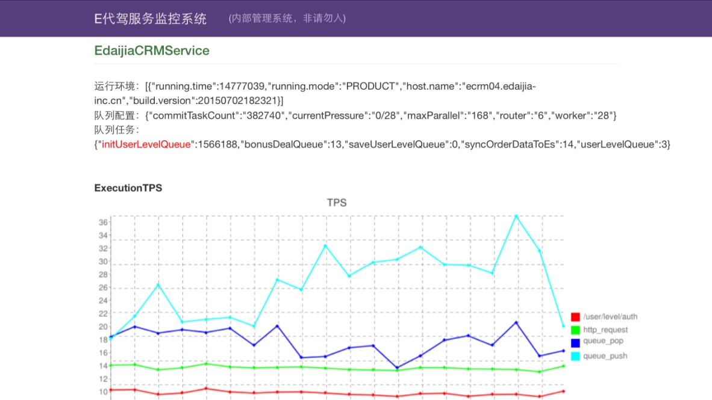

适用于java项目中需要异步处理、并发处理、任务调度等业务处理场景。
先看一个简单的用例，通过注册原生的Java对象到任务容器中，快速让你的方法实现异步并发调用：
# Java原生对象
public class Hello {
@Task(queue = "testQueue")
public void test(String str) {
Util.report(str);
}
}
// 注册原生Java对象到任务容器中
Hello hello = TaskSchedule.registerASyncClass(Hello.class);
// 此处调用test方法已经变成异步并发调用了
hello.test("hello world");
此文档只适合2.0-SNAPSHOT版本
【任务存储中心】：各个业务提交的task到任务存储中心，提交成功后将返回一个唯一的任务标识码，人后任务容器会统一的进行任务的调度、执行，目前存储任务的数据结构是基于redis list数据结构，采用LPUSH、RPOP的命令操作，暂且只支持这种FIFO消费模式
【任务调度路由中心】：任务分发器,负责调度任务存储中心的task给worker去执行，并协调监管worker的运行情况
【worker】：实际任务执行者，负责执行调度路由中心下发的任务，并在任务执行完毕后向调度路由中心汇报执行情况。调度中心根据worker反馈的执行情况，进行任务调度。
【任务存储与调度监管】：设计该角色的目的主要是为了监管任务存储中心和调度路由中心的情况，它在两者之间起到一个纽带的作用，如果任务存储中心发生大量积压，监管者可以发出报警，同时他也可以监控调度路由中心的压力，考虑是否自动增加路由中心的处理能力
【任务容器】：我们把整个组件系统称之为任务容器组件，上面的介绍的这些组件成员对我们开发人员是完全透明，在使用时，开发者不必关心这些这些成员，只需要把你要做的事情告诉任务容器，任务容器负责整个任务中心的调度，负载与异常处理。系统各个成员的协作设计采用akka框架。akka是一个优秀的无锁并发设计组件，它实现了actor模型，利用这种模型可以很方便的设计出上面所说的这几种成员对象并协调这些成员对象的工作。
<dependency>
<groupId>cn.edaijia</groupId>
<artifactId>task-container</artifactId>
<version>2.0-SNAPSHOT</version>
</dependency>
在项目的resource目录的根目录下加入配置文件：taskContainer.conf，配置内容如下
taskContainer{
version = 2.0
# 使用服务的项目名，主要用来防止和别的项目在使用redis 队列时有同名冲突
projectName:crmWeb
# 需要用到的队列，实际创建的redis队列是queueName_ProjectName
taskList[commonTask,testTaskQueue]
# 调度路由中心调度者的个数
router:6
# worker 负责执行任务的个数
worker:28
# 处理队列类的包名全路径 2.0 版本后已经移除该配置
processTaskClass:"cn.edaijia.task.manage.demo.Process"
# redis 集群服务节点 2.0 版本新增
redisClusterNode:"haproxy"
# 监控队列积压情况，报警
alertPhone:"15652636152,13426031637,13810759781,18202794850,18612013051"
}
1. 嵌入到web容器中，容器初始化过程中，加入下面code：
TaskContainer.start();
2. 导出jar文件直接运行，启动之后会在后台监听任务储存中心
程序入口cn.edaijia.task.container.Main
//todo 管理命令、界面待开发
cn.edaijia.task.container(TaskContainerConf.java:95) ## ------------task container suc load conf---------------
cn.edaijia.task.container(TaskContainerConf.java:96) ## project.name:crmWeb
cn.edaijia.task.container(TaskContainerConf.java:97) ## router:6
cn.edaijia.task.container(TaskContainerConf.java:98) ## worker:28
cn.edaijia.task.container(TaskContainerConf.java:99) ## max.parallel:168
cn.edaijia.task.container(TaskContainerConf.java:100) ## task.list:[syncOrderDataToEs, defaultPushMethod, testQueue]
cn.edaijia.task.container(TaskContainerConf.java:101) ## process.task.class:cn.edaijia.task.manage.demo.Process
cn.edaijia.task.container(TaskContainerConf.java:102) ## -------------------------------------------------------
任务容器组件是采用slf4j的接口形式嵌入到代码中的，所以你可以采用支持实现slf4j的日志系统，比如常用的log4j、logback，组件本身不会携带任何具体实现的日志组件
<!--文件输出appender，建议日志格式按照下面方式配置-->
<appender name="taskContainer-file-appender" class="org.apache.log4j.DailyRollingFileAppender">
<param name="File" value="/data/logs/project/task.log"/>
<param name="DatePattern" value="'.'yyyy-MM-dd'.log'"></param>
<layout class="org.apache.log4j.PatternLayout">
<param name="ConversionPattern" value="akka-%d %-5p %X{akkaSource} - %m%n"/>
</layout>
</appender>
<!--开发时期建议log也设为info级别-->
<logger name="cn.edaijia.task.container">
<level value="info"></level>
</logger>
<!--单独把这个namespace空间的log放在一个目录，里面只会输出任务调度的log信息，其它log可以根据自己的需要存放-->
<logger name="cn.edaijia.task.container.process" additivity="false">
<appender-ref ref="taskContainer-file-appender"></appender-ref>
</logger>
2.0 改版后任务提交的方式很简单，1.0的任务提交方式已经弃用。在2.0版本中，你可以让你的代码中的任何一个方法作为异步调用，你只需要把方法所属的对象注册到任务容器中。
public class Hello {
## 注解用于配置该方法如果作为异步将在`任务存储中心`的位置，如果不添加该注解，默认会在commonQueue中
@Task(queue = "testQueue")
public void test(String str) {
Util.report(str);
}
}
Hello hello = TaskSchedule.registerASyncClass(Hello.class);
hello.test("hello world");
【注册异步类】： TaskSchedule.registerASyncClass的主要作用获取指定类的代理类，目的只要是打断正常方法的调用，获取方法的调用信息，包括方法名，参数，参数类型，然后封装我Task2对象。
【任务提交】：例如，当在调用hello.test("hello world")，此时，test方法并没有执行，而是提取到调用信息，封装为Task2，然后序列化存储到任务存储中心。
【异步执行过程】：调度路由中心从任务存储中心获取到任务信息，通过反序列化为Task2对象，然后通过Task2对象描述的方法调用信息反射调用该方法。
整个过程如下：

该功能的存在只是作为该组件的一个附带功能，主要是为了弥补spring的定时job不足的地方。在spring的job中，你不可以在code需要的地方启动的一个job，也不可以在code需要的地方随时停掉job。
// 新建一个job,名为test
TimingJob.newJob("test", new Job() {
@Override
public void logic() {
Util.report("hello world");
}
}
);
// 5s后执行名为test的job一次
TimingJob.scheduleOnce(5,TimeUnit.SECONDS,"test");
// 立马执行名为test的job，并每隔一秒执行一次
TimingJob.schedule(scala.concurrent.duration.Duration.Zero(),1, TimeUnit.SECONDS, "test");
//取消名为test的job
TimingJob.cancel("test");
下图是一个简单的任务容器集群模型，在这个集群模型，以redis集群来作为任务的存储中心，嵌入任务容器组件的服务机器3台，作为任务的调度者和执行者。这3台机器则都会去任务存储机器去调度任务并在自己机器上执行。本质上这3台机器是没有任何关系的。在这种集群状态中，各个节点都需要去任务存储中心拉取任务，所以可以随意的增删集群几点是不会对整个集群存在的影响。所以当你发现整个集群存在压力时，可以方便的横向扩展机器

在上文说到的3台机器之间，调度任务的优先级不存在高低之分，完全根据自己服务的压力情况去调度任务。任务调度的优先级存在随机性和自适应性。
业务方在在编写自己原生的Java对象时，是鼓励把异常信息扔到任务容器中，容器在收到每一个任务时，都会产生一个唯一的任务id，worker在执行业务方的逻辑时，如果捕获到发生的异常，worker会记录异常信心到日志文件中，你可以通过该id去追踪异常信息。另外，任务容器如果存在worker崩溃或者router崩溃，任务存储和调度监管将会重启他们，使系统自动恢复正常
【currentPressure】:当前任务容器处理任务的系统的压力，最大值为1，表示系统已经火力全开，达到最大处理速度
【commitTaskCount】：监测节点已经往任务容器提及的任务数
【maxParallel】:当前节点系统批处理能力的最大值，比如下面，代表可以同时处理12个任务
【队列任务】：代表当前节点中用到的队列有哪些以及每个队列积压的任务数
